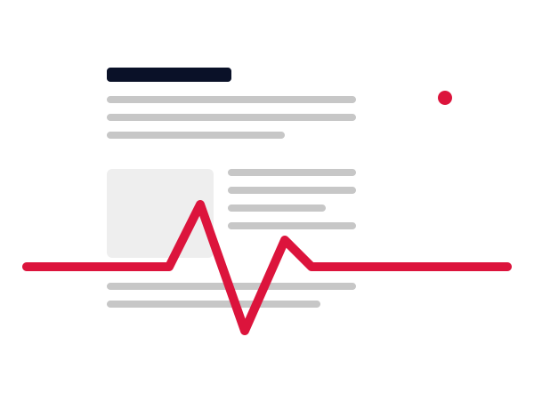
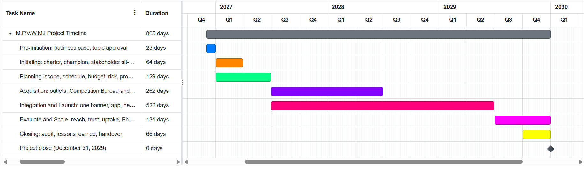

Mitigating Pandemic Vulnerability with Media Investments
(M.P.V.W.M.I)
Gurkeerit Braich 300197206
(M.P.V.W.M.I)
Gurkeerit Braich 300197206

Weak local health communication, uneven vaccine consumption, shrinking local news will cause the next pandemic to have a slower response and lead into more shutdown prone territory.
$1 Billion will be used to acquire and save newspapers, regional TV and radio news across Canada, focusing foremost on BC. A Media conglomerate under one banner, with an editorial charter, an app with a published ranking policy, and a health information desk. A Trust board whose decisions must be unanimous will have limited say over what editorial branches publish, as well as a no-punishment for circumventing and supporting coverage.
Dates: January 2027 to December 31st, 2029.
Assuming we provide results expand the budget and we buy social media platforms and create a Skydance-class group that will own several media companies under it. Similar to how the tech oligarchy has done in order to temper the narrative.
Dates: TBD
In the 2024 fiscal year (April 2024 to March 2025), up to date immunization for 2 year olds was 70.8% across Fraser Health, 69.6% in Abbotsford, 63.8% in Chilliwack, 52.0% in Agassiz and 45.9% in Hope, which falls behind the 80% target (Fraser Health Population Health Observatory, 2025a, 2025b).
In 2021, the province saw lower vaccination rates in Chilliwack and Hope which led to higher cases and described spread amongst unvaccinated groups of individuals (CBC News, 2021).
613 local news outlets closed in 391 communities since 2008. Call to claim that it leads to further reliance on social media outlets for people to garner information. (Canadian Heritage, 2026a).
Since August 2023 the Meta news ban has reduced access to local news and raised citizens exposure to misinformation. (Canadian Heritage, 2026a)
Black Press which includes about 150 titles, like for example Abbotsford News, went through creditor protection and a 2024 sale involving Carpenter Media Group (CBC News, 2024)
Black Press bought small papers and later moved to close some of them. (The Narwhal, n.d.)
Thoughts to consider: Cost of pandemic shutdowns on the Canadian / BC economy, evidence that trusted local messengers raise uptake on vaccinations, reasons for vaccine hesitancy.
| Pre-Initiation | Dec 2026 | Business case, topic approval |
|---|---|---|
| Initiating | Q1 2027 | Charter, Champion discussions, Stakeholder sit-downs |
| Planning | Q1 2027 to Q2 2027 | Scope, Schedule, Budget, Risk / Procurement Plans / WBS |
| Acquisition | Q3 2027 to Q2 2028 | Outlet acquisitions (Focus on BC?), Competition Bureau and CRTC approval (Since we are forming a media monopoly of sorts), Editorial Charter signed. |
| Integration and Launch | Q3 2027 to Q2 2029 | Form all outlets under One Banner, App with alerts live, health information desk, Pandemic Drill formation. |
| Evaluate and Scale | Q3 to Q4 2029 | Reach, trust, and uptake in vaccination results, Consult and revise to head into Phase 2 of Business Case. |
| Closing | Q4 2029 | Audit, lessons learned, hand project over, and look to close on December 31st, 2029. |

| Newspaper Chains | $350M | Postmedia market cap about C$100M and unprofitable (Stockopedia, n.d.; Simply Wall St, 2026). Torstar, 70+ papers, sold for $52M in 2020 (National Observer, 2020) |
|---|---|---|
| Regional TV and Radio News | $250M | Corus held 15 TV and 36 radio stations (CRTC, 2026), carried $1.1B of debt before restructuring (Global News, 2026) and had a market cap near C$5.9M in April 2026 (Trading Economics, 2026). CRTC benefits are generally at least 10% of value for TV and 6% for radio (CRTC, 2026) |
| Newsroom operating proxy to combine corporations under one banner (3 Years) | $200M | Approximate given that we don't have operating figures for all outlets we look to add |
| App, alerts, open-ranking feed | $60M | Approximated under the assumption the scale that we hope to take the app (Replacing Social Media as the source for news) |
| Auditing our system (Worthy consideration before a pandemic stresses it) | $10M | Approximated high under the assumption that we need to rigorously test it before mistakes are made. |
| Research on reach, trust, vaccination uptake | $20M | Approximated with the idea to collaborate with health agencies in conducting several surveys and studies |
| Public Health Partnerships (Invest in these relationships to form communal trust) | $10M | Approximated with the idea that a lot of public health institutions are underfunded so we would make investments in them to promote ourselves |
| Back Up Funds | $100M | Reserve cash excluding benefits received |
| Stakeholder | Reason for Interest | Influence on project |
|---|---|---|
| Canadian Government | Public Benefit / They will be held accountable for the venture | High (Highest) |
| UFV and Kevin | Research, Reputation | High |
| Fraser Health, BC health authorities | Vaccination Uptake, messaging accuracy | High |
| Regulators like Competition Bureau, CRTC | Competition, Public Interest | High |
| People with vested expenditures into these media companies | Price / Money recovery | High |
| Journalists | Jobs | Medium |
| Communities, including vaccine hesitant members | Trustworthy local information | Medium |
| Competitors | Market Share | High |
| Advertisers / Outside platforms | Reach, rates | Medium |
| Medical / Other people vested in communal safety | Trusted Messengers | Medium |
Our current main champion is Kevin Renso a professor at UFV, better known to the students of CIS 385 as Chaacha. We will also need a champion at the federal level who will help us secure funding as Phase 2 of our plan is much more ambitious.
Given the regulatory uncertainty, I want us to re-plan upon every approval and make adjustments as we get over hurdles. Also need to consider as we acquire companies we will learn and make adjustments as to how we acquire as that in itself is a natural loop we have planned for. Given the nature as well of the project we should be considering the risk of the conglomerate we have planned as we go through it. This in general just seems to be the best fit for us currently.
Financial return is weak, Postmedia is unprofitable (Simply Wall St, 2026), so in our Phase 1 we need to focus on avoided costs with these credits and incentives alongside how beneficial this is to the public.
1,000 eligible journalists at the $29,750 maximum credit is up to $29.75M a year (Canadian Heritage, 2026a). Publishers get about $17,000 per journalist a year under the Online News Act, so 1,000 journalists is about $17M (Nieman Lab, n.d.).
Our payback period would run for decades, so instead the social benefits should be presented first and foremost as the reason why this is beneficial.
| Competition challenge (Skydance's deal drew a challenge from state attorneys general, The New York Times, 2026) | Early filings to see if we can create this banner, options for us to diverge if we do the mergers |
| CRTC delay, Extra Benefits cost | Budget the 10% and 6% benefits heavily with early consultations |
| Overpaying for loss-making assets | Independent valuations, set a limit where we won't go past and have to walk away. |
| Public trust backlash, Perceived capture of News sources. | Independence Charter, An ombudsman, audit, unanimous board with a no-punishment rule-set. Published decision making log. |
| Journalist attrition and morale (Need to keep them on board after the merger) | Retention, Benefits, Goals / Markers |
| Funding program changes | Diversify our revenue, monitor how we spend |
| Meta news block limits reach | Own our own channels (App) Direct Alerts |
| Onboarding and bringing people onto the app | Advertising |
| Cost overrun | Contingency cash, as well as walk away prices |
| Vaccination uptake does not move | Reframe and adjust project |
The trust board has a narrow say over what editorial branches publish, every board decision needs all directors to agree, these directors are decided by an independent body that weighs, public and stakeholder needs. The board is barred from rewarding and or punishing outlets for their coverage. This is coupled alongside the independence charter and the ombudsman.
Ownership-level control over newsrooms is a documented risk. After Skydance bought Paramount in 2025, CBS News gained a new editor-in-chief who reported directly to Skydance chief executive David Ellison. This editor was given the job of shaping editorial priorities (Folkenflik, 2025). In December 2025 that editor held back a 60 Minutes segment on American deportations to El Salvador's CECOT prison just before it was due to air. She said it was not ready and wanted responses from the American administration (The Philadelphia Inquirer, 2025). The decision caused internal uproar over whether it was made for political reasons (Axios, 2025).